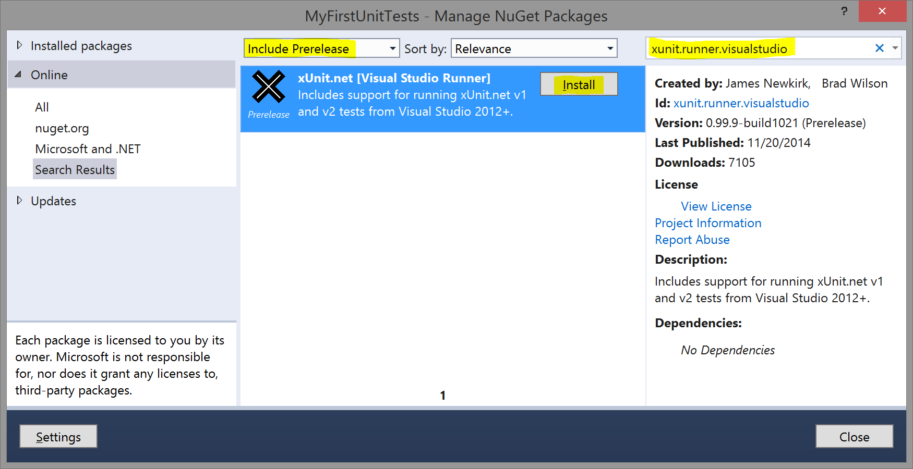
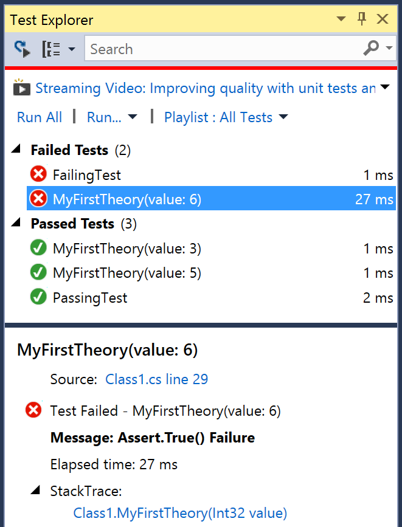

Important note: If you've previously installed the xUnit.net Visual Studio
Runner VSIX (Extension), you must uninstall it first. The Visual Studio runner is only distributed
via NuGet now. To remove it, to go Tools > Extensions and Updates.
Scroll to the bottom of the list, and if xUnit.net is installed, uninstall it. This will force
you to restart Visual Studio.
If you're having problems discovering or running tests, you may be a victim
of a corrupted runner cache inside Visual Studio. To clear this cache, shut down all instances
of Visual Studio, then delete the folder %TEMP%\VisualStudioTestExplorerExtensions.
Also make sure your project is only linked against a single version of the Visual Studio runner
NuGet package (xunit.runner.visualstudio).
If you have Visual Studio Community (or a paid-for version of Visual Studio), you can run your xUnit.net tests within Visual Studio's built-in test runner (named Test Explorer). Unfortunately, this does not include Express editions of Visual Studio (you should upgrade to the free Community Edition instead).
Right click on the project in Solution Explorer and choose Manage NuGet Packages.
Search for (and install) a package named xunit.runner.visualstudio:

Make sure Test Explorer is visible (go to Test > Windows > Test Explorer). Every
time you build your project, the runner will discover unit tests in your project. After a moment of
discovery, you should see the list of discovered tests:
Click the Run All link in the Test Explorer window, and you should see the results update
in the Test Explorer window as the tests are run:

You can click on a failed test to see the failure message, and the stack trace. You can click on the stack trace lines to take you directly to the failing line of code.
If you have Visual Studio Ultimate and you have the CodeLens feature turned on, your source code will now show icons and text related to your tests:

CodeLens not only shows you the last run status of your unit tests, it also offers a convenient place to click to run an individual test.
Note: Only xUnit.net v2 supports pre-enumeration of theories; when discovering theories with v1, it will only show a single test method for the theory.
Note: CodeLens does not support icons for pre-enumerated theories; this is a limitation of the Visual Studio test runner. In a future release, we will enable the ability to turn off theory pre-enumeration of theory data for users who would prefer to have the CodeLens icons rather than individually runnable tests.